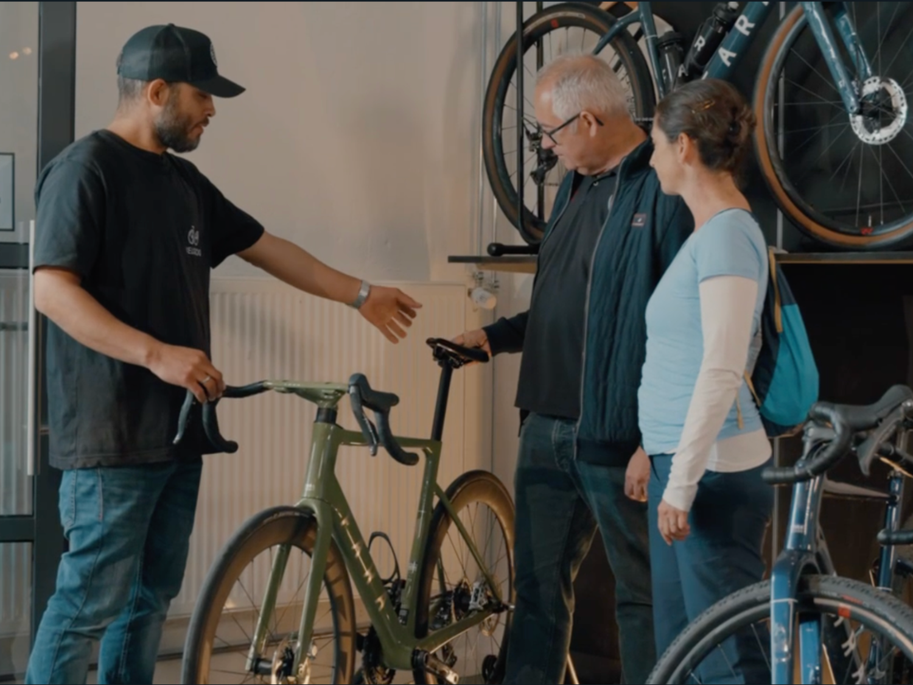

Cleaned and prepared salary data for analysis, ensuring data accuracy and consistency. Designed and built an interactive Power BI dashboard to explore compensation trends, visualize salary distributions, and analyze demographic insights, enabling dynamic user-driven exploration and decision-making.
Cleaned and transformed raw housing data using SQL Server to create an analysis-ready dataset. Tasks included handling missing values, removing duplicates, standardizing formats, and optimizing data types. Used SQL techniques such as JOIN, CASE, and CTEs to ensure data quality and consistency. This project enhanced my SQL skills and prepared the data for visualization in tools like Tableau and Power BI.
View Project

Explored global COVID-19 trends using SQL Server by querying and analyzing large-scale datasets. Performed aggregations, joins, and window functions to uncover insights on case growth, mortality rates, and vaccination progress across countries. The project emphasized efficient data exploration, filtering, and segmentation to derive meaningful health and demographic patterns.
Conducted a comprehensive exploratory data analysis of Airbnb listings using Tableau to uncover trends, patterns, and key insights. Visualized variables such as pricing, availability, location distribution, and customer reviews to identify factors affecting rental performance. Leveraged interactive dashboards to communicate findings effectively and support data-driven decision making. This project enhanced my skills in data visualization, dashboard design, and storytelling with real-world datasets.

Performed comprehensive data cleaning on a customer dataset to prepare it for analysis, including handling missing values and correcting inconsistencies. Created dynamic pivot tables to summarize purchase behavior and identify key trends. Developed an interactive Excel dashboard to visualize insights such as purchase rates, customer segments, and influencing factors, enabling clear data-driven decision-making. This project demonstrated proficiency in Excel’s data cleaning, analytical, and visualization capabilities.

Analyzed factors affecting movie gross revenue using Python. Explored variables like budget, genre, and release date through correlation and data visualization with Pandas and Seaborn. The project highlighted key drivers of box office success and demonstrated effective use of Python for data analysis.

Developed a Python-based web scraper to extract product data from Amazon, including prices, ratings, and reviews. Implemented automation scripts to schedule and run the scraper efficiently as needed, enabling continuous data collection without manual intervention. This project enhanced my skills in web scraping, data extraction, and process automation.